モミジの青いタネが沢山ありました。
2023/06/11
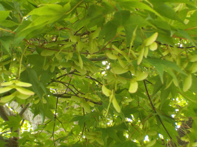
ポピーまつりの帰りにうぐいす茶屋に寄りました。
駐車場にあるモミジにタネが沢山出来ていました。秋にこのタネが飛んで行くところが見たいです。
島根県飯石郡飯南町志津見
2023/06/11

ポピーまつりの帰りにうぐいす茶屋に寄りました。
駐車場にあるモミジにタネが沢山出来ていました。秋にこのタネが飛んで行くところが見たいです。
2013/02/23
うぐいす茶屋で大学いもを買いました。
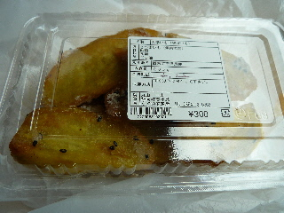
去年は1パック250円でだったのが300円になっていました。
値段が上がりましたが、その分量が増えた感じがします。
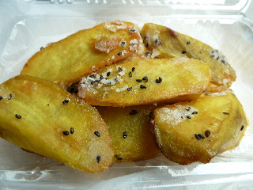
去年よりしっとりした感じがしました。
イモの味って、毎年の天候によって違ってくるんだろうなーなんて思いながら食べました。
来年はまた違う味になるのかな？
毎年同じ場所で同じものを買って比較するのっていいですね。
2013/02/10
手作り感の強いリンゴチップスでした。
リンゴのシンまであるチップスです。
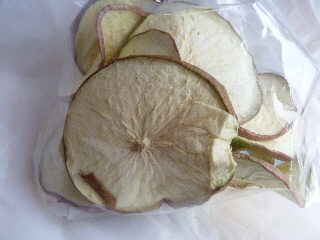
あんまりドライ感がないので、軽くレンジしてたべたらサクサクになって良かったです。
レンジの時間が長いと焦げるので気をつけましょう。
2013/02/10
飯南町の「うぐいす茶屋」でパンを買いました。
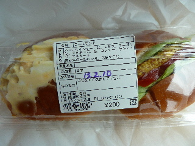
ロールサンド200円です。
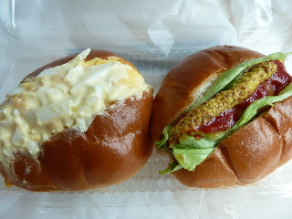
具が沢山入っていますね。
タマゴたっぷりでした。
これくらい入っていると、タマゴ食べたーって感じがして好きです。
2012/06/17
大学芋が欲しい！って寄ってみたら、販売していませんでした。
そのかわり、抹茶のムースが販売していました。
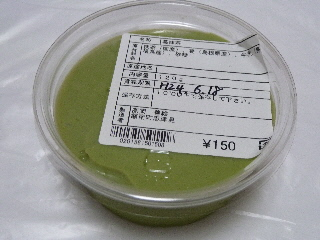
変わった商品ですね。
クズのムースですか。
食べた感じ、美味しい抹茶のムースなんですが、葛なので後味がスッキリしてました。
夏菓子ですね。
葛っていわれると、なんか体に良さそうな感じがしました。
2012/03/10
うぐいす茶屋で買って帰りました。
タッパーにぎっしり入った蒸しパンです。
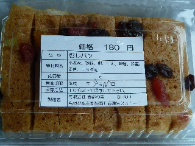
ドライフルーツが乗っていました。
甘くて美味しかったです。
2012/02/18
うぐいす茶屋で大学いもを買いました。
250円です。
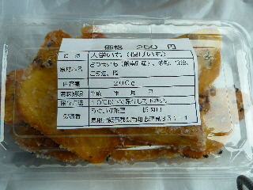
外は砂糖でザクザク、中はホクホクでした。
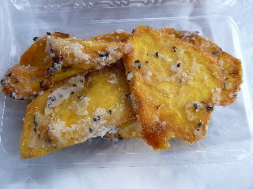
ごまと塩味がほんのりとあって美味しかったです。
また見つけたらきっと買うと思います。
ヒット商品でした。
2012/02/18
飯南町のうぐいす茶屋でサンドイッチ（250円）を買いました。
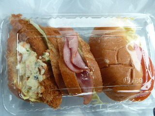
具沢山で、味がしっかりあって美味しかったです。
冬ですが、トマトがはさんでありました。
フライは魚でした。
ちゃんと作ってありますね。
2012/01/28
飯南町志津見にあるうぐいす茶屋によりました。
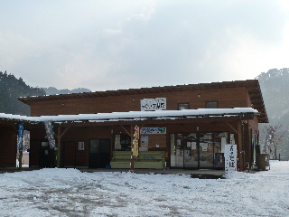
雪が積もっていたので今のところお客さんはいませんでしたが、お昼ご飯の準備中でお店の中は活気がありました。
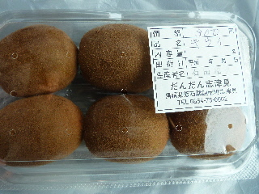
黄色いキウイが販売していたので、買って帰りました。
まだ実が固かったので、やわらかくなったら食べようと思います。